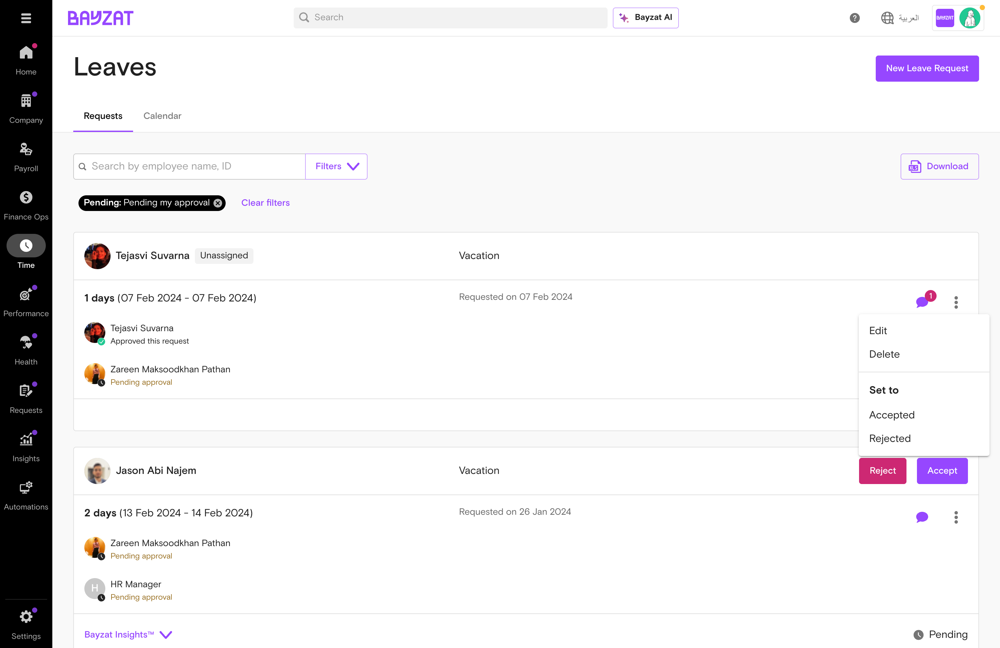
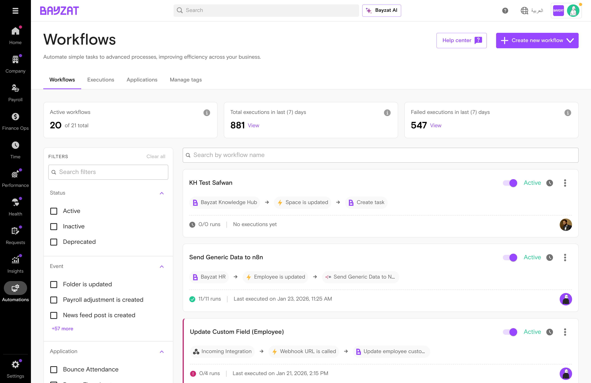

Streamline employee time-off requests, approvals, and leave tracking in one centralized system
Eliminate manual leave tracking with automated request workflows and real-time balance updates
Gain complete visibility into team availability through calendar views and filtering capabilities
Reduce administrative overhead with self-service leave requests and automated calculations
Ensure compliance with leave policies through configurable leave types and approval workflows
What is Leave Management?
Overview
Leave Management is Bayzat's comprehensive time-off administration system that enables HR teams and managers to efficiently handle employee leave requests, track leave balances, and maintain visibility into team availability. The feature provides a centralized platform for creating, reviewing, and managing all types of employee leave—from annual leave and sick days to custom leave types specific to your organization.
The system replaces manual spreadsheets and email-based leave tracking with an intuitive interface that displays leave requests as visual cards, supports calendar-based planning, and offers powerful filtering capabilities. Employees can submit leave requests through a simple modal form, while administrators can quickly review, approve, or reject requests using action menus directly on each leave card.
Key Benefits
Automated Duration Calculation: The system automatically calculates the number of leave days based on selected date ranges, eliminating manual counting errors and ensuring accuracy
Multi-View Flexibility: Switch between Requests view for detailed leave card management and Calendar view for visual team availability planning
Advanced Filtering: Filter leave requests by leave type, status, date range, departments, and offices to quickly find relevant information
Visual Status Tracking: Color-coded leave types and approval workflow visualization on cards provide instant status recognition
Comprehensive Documentation: Attach supporting documents to leave requests and add notes for context and record-keeping
Workflow Automation: Integrate with Bayzat Workflows to automate notifications, approvals, and actions based on leave lifecycle events
Who Uses This Feature?
User Role
What They Do
Value Proposition
HR Administrators
Create, review, approve, and manage all employee leave requests; configure leave types and policies; generate reports on leave utilization
Reduce leave administration time from hours to minutes while eliminating spreadsheet errors and ensuring policy compliance—replacing manual tracking with automated workflows that provide real-time visibility into organizational leave patterns
Line Managers
Review and approve leave requests for direct reports; monitor team availability through calendar views; plan resource allocation around scheduled absences
Make confident staffing decisions backed by visual availability data rather than relying on memory or fragmented email threads—enabling proactive resource planning that prevents coverage gaps and project delays
Employees
Submit leave requests with supporting documentation; track request status and approval workflow; view their leave balance and history
Eliminate uncertainty about leave request status and balance availability, replacing email follow-ups with transparent, self-service access to leave information—ensuring time-off planning happens without administrative friction
Payroll Teams
Access accurate leave data for payroll processing; reconcile leave balances with salary calculations; generate leave reports for financial reconciliation
Ensure payroll accuracy through automated leave data integration instead of manual data entry from multiple sources—eliminating reconciliation discrepancies and reducing month-end processing time
Product Foundation Overview
How Leave Management Fits
Leave Management is a transactional system that processes employee time-off requests through configurable approval workflows. Each leave request consumes from leave balances and flows through to payroll for accurate salary calculations.
Leave requests impact multiple systems: balances are auto-updated, calendar views reflect team availability, and approved leaves feed into payroll processing.
Key Decisions Before Setup
Answer these questions before configuring leave management:
What leave types? — List all categories (Annual, Sick, Maternity, Unpaid, etc.)
Accrual or fixed? — Do balances accrue monthly or reset annually?
Approval levels? — Single approver or multi-step workflow?
Carryover policy? — Can unused leave roll over to next year?
Related Features
Bayzat Workflows — Automate notifications and multi-step approvals for leave requests
Employee Directory — Leave requests link to employee profiles for accurate data
Payroll Integration — Approved leave flows into salary calculations
Organizational Structure — Filter requests by department and office
Holiday Calendar — Accurate duration calculation excludes configured holidays
Prerequisites & Requirements
Requirement
Description
Status
Employee Records
Active employee profiles with department assignments and reporting structures
Required
Leave Types Configuration
Leave types configured with rules, balances, and accrual policies
Required
User Permissions
Role-based access controls for create, view, approve, and manage actions
Required
Organizational Structure
Departments and offices for filtering and reporting
Recommended
Holiday Calendar
Company holidays configured for accurate duration calculations
Recommended
Approval Workflows
Approval hierarchy matching your organization's process
Optional
Known Limitation: Leave balance adjustments (e.g., adding days in lieu) require HR administrator intervention. Self-service balance modification is not available. (TSSD-1820)
Complete User Journey Guide for Leave Requests
The leave management journey encompasses the complete lifecycle of a leave request, from initial submission through approval and final processing. Understanding this end-to-end workflow helps administrators manage employee time-off efficiently while maintaining accurate records and ensuring proper approval protocols.
1
Request Initiation
An employee or HR administrator initiates a new leave request by clicking the "New Leave Request" button. The system opens a modal form where the requester selects the employee, leave type, date range, and provides optional notes or attachments. The system automatically calculates the duration based on the selected dates.
2
Request Submission
Upon form completion, the request is submitted and appears in the Employee Leaves list. The system validates the date range, checks for overlapping requests, and verifies leave balance availability. The request is assigned a status and becomes visible to relevant stakeholders.
3
Review and Decision
HR administrators and managers review pending leave requests in the Requests tab. They can view all request details including employee information, leave type, duration, and any attached documentation. Decision makers use the action menu to accept or reject requests based on business needs and policy compliance.
4
Status Update and Notification
Once a decision is made, the request status updates immediately. The system reflects the approval or rejection across all views including the calendar visualization. Stakeholders can track the complete history of the request including submission date, approval timeline, and any modifications.
5
Ongoing Management
Approved leave requests become part of the organization's leave calendar. Administrators can edit requests if circumstances change, delete cancelled requests, or use the calendar view for resource planning. The system maintains a complete audit trail of all modifications and status changes.
Decision Points in the Process
Leave Type Selection: Determines which leave balance to deduct from and may trigger specific approval workflows
Date Range Validation: System checks for conflicts with existing leave requests and validates against available balance
Approval Decision: Managers evaluate business impact, team coverage, and policy compliance before accepting or rejecting
Modification vs. Cancellation: Administrators decide whether to edit existing requests or delete and recreate them based on the nature of changes
Expected Outcomes at Each Stage
Stage
Expected Outcome
System Behavior
Initiation
Valid leave request form completed
Auto-calculates duration, validates date logic, enables submission
An employee plans their annual vacation. HR administrator creates the leave request with specific dates, the system calculates the duration, and the request goes through approval. Once approved, the leave appears in the team calendar for resource planning purposes.
Emergency Leave Request
An employee needs unexpected time off for personal reasons. HR quickly creates an emergency leave request, attaches supporting documentation, and fast-tracks approval. The system immediately updates the calendar and adjusts leave balances upon approval.
Leave Request Modification
An approved leave request needs date changes due to business needs. HR administrator uses the edit function to adjust dates, the system recalculates duration, and the modified request maintains its approval status while updating the calendar view.
Bulk Leave Review
During peak holiday season, HR reviews multiple pending leave requests. Using filters to view requests by department and date range, administrators make batch decisions while monitoring team coverage through the calendar visualization.
Journey Tip: Use the Calendar tab to visualize team coverage before approving leave requests. This helps identify potential staffing gaps and make informed approval decisions that balance employee needs with business continuity.
Feature Discovery with "How to Access" and "Navigation Paths"
Leave Management is accessible through multiple entry points in the Bayzat platform, designed to support different workflows and user preferences. Understanding these access paths ensures efficient navigation and quick access to leave request management capabilities.
How to Access Leave Management
The primary access point for Leave Management is through the Time menu in the main navigation. This centralized location provides consistent access regardless of your current location in the platform.
Primary Navigation Path: Time → Leaves → Employee leaves
Employee Leaves main interface showing request cards and navigation tabs
Navigation Paths
Access Method
Navigation Path
Best Used For
Main Menu Navigation
Time → Leaves → Employee leaves
General leave request management, daily operations, reviewing pending requests
Requests Tab
Employee leaves → Requests tab
List view of all leave requests with filtering and action capabilities
Calendar Tab
Employee leaves → Calendar tab
Visual planning, identifying coverage gaps, understanding team availability
Direct Request Creation
Employee leaves → New Leave Request button
Quick leave request submission without navigating through multiple screens
Quick Access Methods
New Leave Request Button: Available on the main Employee Leaves screen, provides immediate access to the request creation modal regardless of which tab (Requests or Calendar) is active
Action Menu: Three-dot menu on each leave request card provides quick access to edit, delete, accept, or reject actions without opening full request details
Filter Panel: Accessible from the Requests tab, allows rapid filtering by leave type, status, date range, departments, or offices to narrow down visible requests
Tab Toggle: Switch between Requests (list view) and Calendar (visual view) using the tab navigation at the top of the screen
Menu Locations
Time Menu
The Time menu in the main navigation serves as the parent menu for all time-tracking and leave-related features. This is where you'll find the Leaves submenu that contains Employee leaves functionality.
Leaves Submenu
Within the Time menu, the Leaves submenu groups all leave-related features. Employee leaves is the primary option for managing leave requests, with additional options potentially available for leave policies and balance management.
Employee Leaves Section
The main landing page for leave management, featuring two tabs (Requests and Calendar), a filter panel, and the New Leave Request button. This is your central hub for all leave request operations.
URL Patterns
While the exact URL structure may vary based on your Bayzat instance configuration, leave management typically follows these patterns:
Main Leave Management:/time/leaves/employee-leaves
Navigation Tip: Bookmark the Employee Leaves page for quick access. The system remembers your last active tab (Requests or Calendar) and filter settings, allowing you to return to your preferred view instantly.
Context-Specific Access
Depending on your role and permissions, you may also access leave information through:
Employee Profile: View an individual employee's leave history and balance from their profile page
Team Dashboard: Managers may see team leave summaries in their dashboard views
Reports Section: Access leave reports and analytics through the reporting interface
Workflow Builder: Configure leave-related automation through Automations → Workflows (see Workflow Integration section)
Setup Process
Before using Leave Management effectively, certain foundational configurations must be completed. This setup process ensures the system accurately tracks leave balances, enforces company policies, and supports your organization's specific leave management requirements.
First-Time Configuration Steps
Define Leave Types: Configure the types of leave your organization offers (e.g., Annual Leave, Sick Leave, Emergency Leave, Maternity/Paternity Leave, Unpaid Leave). Each leave type should have clear definitions and associated policies.
Set Leave Policies: Establish rules for each leave type including accrual rates, maximum balances, carryover rules, and approval requirements. These policies govern how leave is earned, used, and managed.
Configure Approval Workflows: Determine who can approve leave requests for different employee groups. This may vary by department, seniority level, or leave type.
Initialize Employee Leave Balances: Set starting leave balances for all employees. This may involve importing historical data or setting initial allocations based on tenure and policy.
Assign Permissions: Grant appropriate access levels to HR administrators, managers, and employees. Define who can create, view, edit, approve, and delete leave requests.
Configure Calendar Settings: Set up working days, public holidays, and organizational calendar preferences to ensure accurate leave duration calculations.
Test the System: Create test leave requests to verify that calculations, approvals, and notifications work as expected before rolling out to the entire organization.
Required Settings to Configure
Setting Category
Configuration Required
Impact on Leave Management
Leave Types
Define all leave categories used in your organization
Determines available options in leave request dropdown and affects balance tracking
Leave Policies
Set accrual rates, maximum balances, carryover rules
Governs how leave is earned and consumed, enforces policy compliance automatically
Approval Hierarchy
Define approval chains by department or role
Routes requests to correct approvers, ensures proper authorization
Working Calendar
Configure working days, weekends, public holidays
Affects duration calculations and ensures accurate leave day counts
User Permissions
Assign roles and access levels
Controls who can perform specific actions (create, approve, edit, delete)
Notification Settings
Configure email and in-app notifications
Keeps stakeholders informed of request submissions, approvals, and status changes
Recommended Default Values
Leave Type Defaults
Start with standard leave types: Annual Leave (paid), Sick Leave (paid), Emergency Leave (paid), Unpaid Leave. Add organization-specific types (e.g., Study Leave, Bereavement Leave) as needed.
Accrual Settings
Common default: 2 days per month for annual leave (24 days per year). Sick leave often has different accrual or allocation rules. Set accrual to begin from employee start date.
Approval Workflow
Default approval chain: Direct Manager → Department Head (for requests exceeding 5 days). Single-level approval for short leaves, multi-level for extended absences.
Calendar Configuration
Set standard work week (Sunday-Thursday or Monday-Friday based on region). Import national public holidays for your country. Exclude weekends from leave duration calculations.
Verification Steps
After completing initial setup, verify the configuration by testing these scenarios:
Create Test Leave Request: Submit a sample leave request and verify that:
Duration is calculated correctly (excluding weekends and holidays)
Leave balance is checked and validated
Request appears in the correct status
Appropriate approvers are notified
Test Approval Workflow: Process the test request through approval:
Verify approvers can access the request
Confirm approval actions update status correctly
Check that leave balance adjusts upon approval
Ensure calendar view reflects the approved leave
Verify Balance Calculations: Check that:
Initial balances are set correctly for all employees
Accruals are calculated based on configured rules
Leave consumption reduces balances accurately
Balance validation prevents over-booking
Test Edit and Delete Functions: Confirm that:
Authorized users can edit existing requests
Edits recalculate duration and update balances
Delete function removes requests and restores balances
Action menu permissions work as configured
Review Calendar Visualization: Ensure:
Approved leave appears in calendar view
Multiple concurrent leaves are visible
Calendar respects configured working days
Team coverage can be assessed visually
⚠️ Critical Setup Requirement
Impact: Leave balance adjustments require manual HR intervention. The system does not currently provide self-service functionality for employees to directly adjust their leave balance, particularly for compensatory time off (days in lieu).
Workaround: HR administrators must manually adjust employee leave balances through the system's balance management interface when compensatory time off or other balance corrections are needed. Document all manual adjustments for audit purposes.
Reference: TSSD-1820
Post-Setup Checklist
Configuration Item
Verification Method
Status
Leave types defined
Check dropdown in New Leave Request form
☐
Leave policies configured
Review policy settings in system configuration
☐
Approval workflows set
Submit test request and verify routing
☐
Employee balances initialized
Spot-check balances for sample employees
☐
Permissions assigned
Test access with different user roles
☐
Calendar configured
Create leave request spanning weekend/holiday
☐
Notifications working
Verify email/in-app alerts are received
☐
System tested end-to-end
Complete full leave request lifecycle
☐
Setup Tip: Document your leave policies and configuration decisions in a central location accessible to all HR administrators. This ensures consistency in leave management practices and provides reference material for troubleshooting and future updates.
Feature Usage with Common Workflows
This section covers the essential tasks for managing employee leave requests in Bayzat. All leave management operations are performed through the Time menu under the Leaves submenu.
Time → Leaves → Employee leaves
Creating a New Leave Request
HR administrators can create leave requests on behalf of employees through the New Leave Request modal.
Navigate to Time → Leaves → Employee leaves
Click the New Leave Request button in the top right
In the creation modal, complete the following fields:
Employee: Search and select the employee (searchable dropdown)
Type of Leave: Select from available leave types (dropdown)
From date: Select the start date of the leave
To date: Select the end date of the leave
Number of days: Auto-calculated based on date range
Note: Add optional notes or comments
Attachments: Upload supporting documents if required
Review the auto-calculated duration to ensure accuracy
Click Submit to create the leave request
New Leave Request creation form with employee selection and date fields
Tip: The system automatically calculates the number of days based on your selected date range, accounting for weekends and company holidays according to your configured work schedule.
Viewing Leave Requests
Leave requests are displayed as organized cards showing key information at a glance. The interface provides two viewing modes: Requests (list view) and Calendar (timeline view).
List View (Requests Tab)
The default view displays leave requests as cards with the following information:
Employee name and profile picture
Leave type (color-coded for quick identification)
Duration (number of days)
Date range (From - To dates)
Approval status/workflow visualization
Request date (when the request was submitted)
Leave requests displayed as cards with employee information, dates, and status
Filtering Leave Requests
Use the filter panel to narrow down displayed requests:
Leave Type: Filter by specific leave categories (Annual, Sick, etc.)
Status: Filter by approval status (Pending, Approved, Rejected)
Leave Date: Filter by date range
Departments: Filter by organizational department
Offices: Filter by office location
Note: Multiple filters can be applied simultaneously for precise results. For example, you can view all pending annual leave requests for the Marketing department.
Calendar View
Switch to the Calendar tab to visualize leave requests in a timeline format, useful for:
Identifying leave overlaps and coverage gaps
Planning team capacity and resource allocation
Viewing leave patterns across the organization
Updating Leave Requests
Existing leave requests can be modified through the Edit function, accessible via the action menu on each leave request card.
Locate the leave request you want to update
Click the three-dot menu (⋮) on the leave request card
Select Edit from the action menu
The edit form opens with pre-filled values from the existing request
Modify any of the following fields:
Type of Leave
From date
To date
Note
Attachments
Review the updated auto-calculated duration
Click Save to apply changes

Action menu showing Edit, Delete, Accept, and Reject options
Quick Status Actions
The action menu also provides quick status update options:
Set to Accepted: Immediately approve the leave request
Set to Rejected: Immediately reject the leave request
Tip: Quick status actions are useful for processing straightforward requests without opening the full edit form. Use these for rapid approval workflows.
Deleting Leave Requests
Leave requests can be permanently removed from the system when necessary (e.g., duplicate entries, cancelled requests).
Locate the leave request to delete
Click the three-dot menu (⋮) on the leave request card
Select Delete from the action menu
Confirm the deletion in the confirmation dialog
The leave request is permanently removed from the system
⚠️ Permanent Action
Deletion is permanent and cannot be undone. Ensure you have selected the correct leave request before confirming deletion. Consider rejecting requests instead of deleting them to maintain an audit trail.
Common Workflow Patterns
Processing Pending Requests
Review and approve/reject leave requests submitted by employees:
Filter by Status: Pending
Review each request card for dates and duration
Check team calendar for coverage conflicts
Use quick actions (Accept/Reject) or Edit for detailed review
Add notes if rejecting to explain the decision
Bulk Leave Entry for Holidays
Create leave requests for company-wide holidays or events:
Prepare list of affected employees
Create individual leave requests for each employee
Select the same leave type (e.g., Public Holiday)
Use consistent date ranges
Add note explaining the company holiday
Correcting Submitted Requests
Fix errors in leave requests (dates, duration, type):
Locate the incorrect request
Open the Edit form via action menu
Correct the erroneous fields
Verify auto-calculated duration updates correctly
Add note documenting the correction
Save changes
Leave Balance Management
Monitor and manage employee leave balances:
View leave requests to track usage patterns
Filter by employee to see individual leave history
Use Calendar view to identify high-usage periods
Note: Manual leave balance adjustments require HR admin intervention (see Known Limitations)
Leave Request Approval Workflow
Leave request cards display approval workflow visualization, showing the approval chain and current status. While the system supports approval workflows, the configuration and management of these workflows is handled through separate system settings.
Approval Display: Each leave request card shows the approval status and workflow progress. Approved requests display the approver information, while pending requests show who needs to take action next.
Workflow Integration
Bayzat Leave Management integrates with Bayzat Workflows, enabling automated processes based on leave request lifecycle events. This integration allows you to build sophisticated automation rules that respond to leave creation, updates, and deletions.
Accessing Workflow Configuration
To create workflows for leave management:
Automations → Workflows → + Create workflow
Navigate to Automations in the main menu
Select Workflows
Click + Create workflow
Select Bayzat Timeoff as the application
Choose from available triggers and actions

Workflows list showing available automation options
Available Triggers
Workflows can be triggered by the following leave request events:
Trigger Event
When It Fires
Common Use Cases
Leave request is created
When a new leave request is submitted or created by HR
Business Value: Maintain data integrity when leave requests are cancelled.
Trigger: Leave request is deleted
Action: Delete related calendar events, remove from capacity planning tools
Outcome: Consistent data across integrated systems without manual cleanup
Bulk Create Holiday Leave
Business Value: Automate company-wide holiday leave allocation.
Trigger: Manual workflow execution OR scheduled date
Action: Create leave request for all employees with specific leave type and dates
Outcome: Eliminate manual entry for public holidays affecting entire organization
Update Leave Type Based on Duration
Business Value: Automatically categorize leave requests according to business rules.
Trigger: Leave request is created OR updated
Condition: Duration > 10 days AND Type = Annual Leave
Action: Update leave request to change Type to Extended Leave
Outcome: Consistent leave categorization for reporting and analytics
Building a Leave Request Workflow
Follow these steps to create a workflow for leave management:
Define the business requirement
What process are you automating?
What event should trigger the workflow?
What action should be taken?
Select the trigger
Choose from: Leave request is created, updated, or deleted
Consider the timing and frequency of the trigger
Add conditions (optional)
Filter based on leave type, duration, employee, department
Use conditions to target specific scenarios
Configure the action
Select: Create, Update, or Delete leave request
Map fields from trigger data to action parameters
Set static values where needed
Test the workflow
Create a test leave request to verify trigger fires
Confirm action executes as expected
Check workflow execution logs
Activate and monitor
Enable the workflow for production use
Monitor execution logs for errors
Refine conditions and actions based on results
Best Practice: Start with simple workflows and gradually add complexity. Test thoroughly in a non-production environment before deploying workflows that modify or delete leave requests.
Workflow Limitations and Considerations
⚠️ Workflow Execution Timing
Workflows execute asynchronously after the triggering event. There may be a slight delay between the leave request action and the workflow execution. Design workflows to account for this delay.
Circular Dependencies: Avoid creating workflows where an action triggers another workflow that creates a loop (e.g., Update trigger → Update action → Update trigger)
Data Validation: Workflows do not bypass system validation rules. Actions that violate business rules (e.g., creating leave that exceeds balance) will fail
Permissions: Workflows execute with system-level permissions, but audit logs track the workflow as the actor
Error Handling: Monitor workflow execution logs to identify and resolve failed workflows. Failed workflows do not automatically retry
Advanced Workflow Patterns
Multi-Step Approval Automation
Combine triggers and actions to create sophisticated approval chains:
Trigger: Leave request is created
Condition: Duration > 5 days
Action: Update leave request to add "Pending Department Head Approval" note
Action: Send notification to department head
Conditional Leave Type Assignment
Automatically categorize leave based on business rules:
Trigger: Leave request is created
Condition: Employee tenure < 1 year AND Type = Annual Leave
Action: Update leave request to change Type to Probationary Leave
Integration with External Systems
Use workflows to sync leave data with other platforms:
Trigger: Leave request is created
Condition: Status = Approved
Action: Call webhook to update external HRIS or payroll system
Note: Webhook actions require configuration in the Workflows interface. Consult the Bayzat Workflows documentation for details on webhook setup and authentication.
Business Rules & Limitations
Business Rules
The Leave Management feature operates under the following business rules:
Date Validation: Leave requests must have valid start and end dates, with the end date occurring on or after the start date
Duration Calculation: The system automatically calculates the number of days based on the date range selected, accounting for working days
Leave Type Assignment: Each leave request must be associated with a specific leave type configured in the system
Employee Association: Leave requests must be linked to an active employee in the system
Status Management: Leave requests follow defined status transitions (Pending, Accepted, Rejected)
Known Limitations
Self-Service Balance Adjustments: Employees cannot independently adjust their leave balance. Manual intervention from HR or admin is required for leave balance modifications, including compensatory time off (days in lieu). (Reference: TSSD-1820)
The current implementation requires HR team involvement for balance adjustments, which could be streamlined through enhanced self-service capabilities in future releases.
System Constraints
Bulk Operations: While the interface supports individual leave request management, bulk action capabilities are limited
Historical Data: Deleted leave requests are permanently removed and cannot be recovered
Calendar View: Calendar visualization is available for leave planning but may have display limitations with large datasets
Troubleshooting & Edge Cases
Common Issues
Issue
Cause
Resolution
Cannot create leave request
Employee not selected or leave type not configured
Ensure employee is selected from the searchable dropdown and that leave types are properly configured in system settings
Duration not calculating correctly
Date range includes non-working days or public holidays
Verify that the working days calendar is configured correctly. The system calculates based on working days only
Leave request not appearing in list
Filters are applied that exclude the request
Clear all filters using the filter panel or check that the correct tab (Requests/Calendar) is selected
Cannot edit or delete leave request
Insufficient permissions or request already processed
Verify user has appropriate admin permissions. Accepted/Rejected requests may have restrictions on modifications
Calendar view not loading
Large dataset or browser compatibility issue
Try reducing the date range filter or use the Requests tab view instead. Clear browser cache if issue persists
Edge Cases
Overlapping Leave Requests: The system allows creation of overlapping leave requests for the same employee. HR admins should manually verify for conflicts when reviewing requests
Past-Dated Requests: Leave requests can be created with dates in the past, useful for recording historical leave but requiring careful validation
Cross-Year Leave: Leave requests spanning multiple calendar years are supported, but balance deductions follow configured year-end policies
Partial Day Leave: The system calculates leave in full-day increments. Half-day or hourly leave may require special configuration or manual adjustment
Leave Type Changes: If a leave type is deleted or modified, existing requests using that type may display inconsistently
Multiple Approvers: When approval workflows involve multiple approvers, the card display shows the approval chain but may not indicate which approver is currently required to act
Performance Considerations
Tip: For organizations with large employee counts or extensive leave history, use the filter panel to narrow results by date range, department, or office. This improves page load times and makes it easier to locate specific requests.
Support & Resources
Frequently Asked Questions
How do I adjust an employee's leave balance?
Leave balance adjustments require HR admin intervention. Navigate to the employee's profile and access their leave balance settings. Manual adjustments can be made to add compensatory time off or correct discrepancies. Reference: TSSD-1820
Can employees submit their own leave requests?
The Leave Management feature is designed for HR admin use. Employee self-service leave requests are typically handled through the employee portal. This interface allows admins to create requests on behalf of employees or manage submitted requests.
What happens when I delete a leave request?
Deleting a leave request permanently removes it from the system. The action requires confirmation and cannot be undone. Ensure you want to permanently delete the request before confirming, as there is no recovery option.
How does the system calculate leave duration?
The system automatically calculates the number of days based on the selected date range, taking into account working days as configured in your organization's calendar settings. Public holidays and weekends are excluded from the calculation.
Can I filter leave requests by multiple criteria?
Yes, the filter panel supports simultaneous filtering by Leave Type, Status, Leave Date range, Departments, and Offices. Apply multiple filters to narrow down the list to specific requests you need to review.
What's the difference between Requests and Calendar views?
The Requests tab displays leave requests as cards in a list format with detailed information. The Calendar tab provides a visual timeline view for leave planning, making it easier to identify overlapping leave periods and plan team coverage.
Getting Help
HR Admin Support: Contact your organization's HR administrator for policy questions, leave balance inquiries, or approval process guidance
Technical Support: For system issues, bugs, or feature questions, reach out to Bayzat Support through the in-app help center or your designated support channel
Knowledge Base: Access the Bayzat Help Center at bayzathelp.zendesk.com for additional articles and guides
In-App Help: Use the help icon within the Bayzat platform to access contextual help and submit support tickets directly
Training Resources: Request access to Bayzat training materials or schedule a session with your account manager for comprehensive feature walkthroughs
Quick Support Tip: When contacting support, include the leave request ID, employee name, and screenshots of any error messages to expedite resolution.
Glossary of Terms
Key Terms
Term
Definition
Leave Request
A formal submission requesting time off from work for a specified period. Contains employee information, leave type, dates, duration, and optional notes or attachments.
Leave Type
A category of leave defined by the organization (e.g., Annual Leave, Sick Leave, Unpaid Leave). Each type may have different balance rules, approval requirements, and policies.
Leave Balance
The remaining amount of leave days available to an employee for a specific leave type, calculated based on accrual rules and previous usage.
Duration
The length of a leave request measured in working days, automatically calculated by the system based on the date range and working calendar.
Status
The current state of a leave request in the approval process. Common statuses include Pending, Accepted, and Rejected.
Approval Workflow
The sequence of approvers who must review and authorize a leave request before it is finalized. May involve multiple levels of management.
Compensatory Time Off
Leave granted in compensation for overtime work or work performed on rest days. Also known as "days in lieu" or "comp time."
Working Days
Days on which employees are scheduled to work, excluding weekends and public holidays as defined in the organization's calendar configuration.
Calendar View
A visual representation of leave requests displayed on a timeline, useful for identifying leave patterns, overlaps, and planning team coverage.
Action Menu
The three-dot menu icon on leave request cards that provides access to operations like Edit, Delete, Accept, and Reject.
Filter Panel
The interface component that allows users to narrow down the list of leave requests by applying criteria such as leave type, status, date range, department, or office.
Attachment
Supporting documentation uploaded with a leave request, such as medical certificates, travel itineraries, or other relevant files.
Employee Portal
The self-service interface where employees can view their leave balances, submit leave requests, and track approval status (separate from the admin interface).
Leave Policy
The organizational rules governing leave entitlements, accrual rates, carryover limits, approval requirements, and usage restrictions.